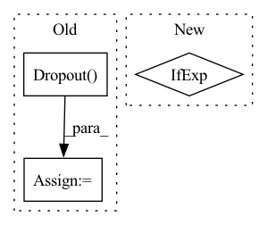

Pattern ID :15924
Before Change
else:
self.pos_embed = None
self.pos_drop = nn.Dropout(p=drop_rate)
dpr = [x.item() for x in torch.linspace(0, drop_path_rate, depth)
] // stochastic depth decay rule
self.use_rel_pos_bias = use_rel_pos_biasAfter Change
num_patches = (pretrain_img_size // patch_size) * (
pretrain_img_size // patch_size)
num_positions = (num_patches +
1) if pretrain_use_cls_token else num_patches
self.pos_embed = nn.Parameter(
torch.zeros(1, num_positions, embed_dim))
else:In pattern: SUPERPATTERN
Frequency: 3
Non-data size: 3
Instances Fragment ID: 53686195
Project Name: alibaba/easycv
Commit Name: 9f01a37ad4df57b30430c41df08459025174e8fd
Time: 2022-09-15
Author: 38110862+tuofeilunhifi@users.noreply.github.com
File Name: easycv/models/backbones/vitdet.py
M Class Name: ViTDet
N Class Name: ViTDet
M Method Name: __init__(22)
N Method Name: __init__(25)
M Parent Class: nn.Module
N Parent Class: nn.Module
M File Name: easycv/models/backbones/vitdet.py
N File Name: easycv/models/backbones/vitdet.py
M Start Line: 606
M End Line: 686
N Start Line: 357
N End Line: 440
Before Change
attention_scores = layers.Softmax(axis=-1, name=name and name + "attention_scores")(attention_scores)
if attn_dropout > 0:
attention_scores = layers.Dropout( attn_dropout, name=name and name + "attn_drop") (attention_scores)
// value = [batch, num_heads, cls_token + hh * ww, key_dim]
// attention_output = tf.matmul(attention_scores, value) // [batch, num_heads, cls_token + hh * ww, key_dim]
// attention_output = layers.Lambda(lambda xx: tf.matmul(xx[0], xx[1]))([attention_scores, value])
attention_output = attention_scores @ value
attention_output = functional.transpose(attention_output, perm=[0, 2, 1, 3])
attention_output = functional.reshape(attention_output, [-1, bb, emded_dim])
// print(f">>>> {attention_output.shape = }, {attention_scores.shape = }")
After Change
value = functional.reshape(value, [-1, value.shape[1], num_heads, key_dim])
value = functional.transpose(value, [0, 2, 1, 3])
pos_emb = MultiHeadRelativePositionalEmbedding(attn_height=attn_height, name=name and name + "pos_emb") if use_pos_emb else None
output_shape = [-1, bb, emded_dim]
return scaled_dot_product_attention(query, key, value, output_shape, pos_emb, out_weight, out_bias, dropout=attn_dropout, name=name)
Fragment ID: 53686194
Project Name: leondgarse/keras_cv_attention_models
Commit Name: c870bf2e8d3e6b8b0e969d5468d550085414c0cd
Time: 2023-02-05
Author: leondgarse@gmail.com
File Name: keras_cv_attention_models/beit/beit.py
M Class Name: AnonimousClass
N Class Name: AnonimousClass
M Method Name: attention_block(11)
N Method Name: attention_block(11)
M Parent Class:
N Parent Class:
M File Name: keras_cv_attention_models/beit/beit.py
N File Name: keras_cv_attention_models/beit/beit.py
M Start Line: 151
M End Line: 199
N Start Line: 179
N End Line: 204
Before Change
if num_classes > 0:
nn = keras.layers.GlobalAveragePooling2D(name="avg_pool")(nn)
if drop_rate > 0:
nn = keras.layers.Dropout( drop_rate, name="head_drop") (nn)
nn = keras.layers.Dense(num_classes, dtype="float32", activation=classifier_activation, name="predictions")(nn)
model = keras.models.Model(inputs, nn, name=model_name)After Change
name = "stack{}_".format(id + 1)
cur_attn_params = {
"attn_types": attn_types[id] if isinstance(attn_types, (list, tuple)) else attn_types,
"attn_params": attn_params[id] if isinstance(attn_params, (list, tuple)) else attn_params,
"se_ratio": se_ratio[id] if isinstance(se_ratio, (list, tuple)) else se_ratio,
"use_eca": use_eca[id] if isinstance(use_eca, (list, tuple)) else use_eca,
"groups": groups[id] if isinstance(groups, (list, tuple)) else groups, Fragment ID: 53686187
Project Name: leondgarse/keras_cv_attention_models
Commit Name: a6b256994deba19f65ec593111c13c3744960557
Time: 2021-10-13
Author: leondgarse@gmail.com
File Name: keras_cv_attention_models/aotnet/aotnet.py
M Class Name: AnonimousClass
N Class Name: AnonimousClass
M Method Name: AotNet(29)
N Method Name: AotNet(24)
M Parent Class:
N Parent Class:
M File Name: keras_cv_attention_models/aotnet/aotnet.py
N File Name: keras_cv_attention_models/aotnet/aotnet.py
M Start Line: 169
M End Line: 226
N Start Line: 212
N End Line: 271